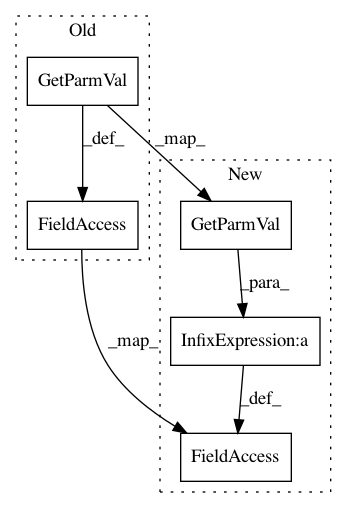

dde9692f10bd2bd98a435c1f0209319efc9cbb8a,trunk/SUAVE/Input_Output/OpenVSP/vsp_read_wing.py,,vsp_read_wing,#Any#Any#,20
Before Change
x_sec_1_tc_parm = vsp.GetXSecParm(x_sec_1,"Tip_Chord")
// Calcs
sweep = vsp.GetParmVal(x_sec_1_sweep_parm)
sweep_loc = vsp.GetParmVal(x_sec_1_sweep_loc_parm)
c_4_sweep = convert_sweep(sweep,sweep_loc,0.25,wing.aspect_ratio,wing.taper)
// Pull and pack
wing.dihedral = vsp.GetParmVal(x_sec_1_dih_parm) * Units.deg
wing.taper = vsp.GetParmVal(x_sec_1_taper_parm)
wing.chords.root = vsp.GetParmVal(x_sec_1_rc_parm)* units_factor
wing.chords.tip = vsp.GetParmVal(x_sec_1_tc_parm) * units_factor
wing.chords.mean_geometric = wing.areas.reference / wing.spans.projected
wing.sweeps.quarter_chord = c_4_sweep
// Twists
wing.twists.root = vsp.GetParmVal(wing_id, "Twist", "XSec_0") * Units.deg
After Change
x_sec_1_tc_parm = vsp.GetXSecParm(x_sec_1,"Tip_Chord")
// Calcs
sweep = vsp.GetParmVal(x_sec_1_sweep_parm) * Units.deg
sweep_loc = vsp.GetParmVal(x_sec_1_sweep_loc_parm)
taper = vsp.GetParmVal(x_sec_1_taper_parm)
c_4_sweep = convert_sweep(sweep,sweep_loc,0.25,wing.aspect_ratio,taper)
// Pull and pack
wing.sweeps.quarter_chord = c_4_sweep
wing.taper = taper
wing.dihedral = vsp.GetParmVal(x_sec_1_dih_parm) * Units.deg - x_rot
wing.chords.root = vsp.GetParmVal(x_sec_1_rc_parm)* units_factor
In pattern: SUPERPATTERN
Frequency: 3
Non-data size: 5
Instances
Project Name: suavecode/SUAVE
Commit Name: dde9692f10bd2bd98a435c1f0209319efc9cbb8a
Time: 2020-07-22
Author: ebotero@stanford.edu
File Name: trunk/SUAVE/Input_Output/OpenVSP/vsp_read_wing.py
Class Name:
Method Name: vsp_read_wing
Project Name: suavecode/SUAVE
Commit Name: adde6771fa06bfe69c2889a276c3a7b389dee3af
Time: 2021-03-02
Author: ebotero@stanford.edu
File Name: trunk/SUAVE/Input_Output/OpenVSP/vsp_read_wing.py
Class Name:
Method Name: vsp_read_wing
Project Name: suavecode/SUAVE
Commit Name: a6ddba80a8fd421afd4f858654e636c262473123
Time: 2018-09-05
Author: ebotero@stanford.edu
File Name: trunk/SUAVE/Input_Output/OpenVSP/vsp_read_wing.py
Class Name:
Method Name: vsp_read_wing